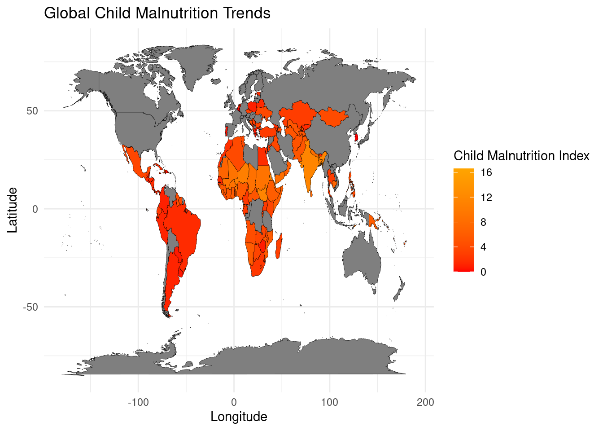

A Tale of Two Plates: A Global Belly Ache Exposes Faulty Fortunes
Quarto Assignment
.jpg?sfvrsn=ceb0ec8f_8)
Imagine a world where every child, no matter where they are born, has a plate brimming with colorful, nourishing food. A world where laughter echoes from playgrounds, fueled by the energy of healthy bodies and curious minds. Sadly, this is not the reality for millions of children around the globe. Their plates remain empty, their bellies ache with hunger, and their futures are dimmed by the shadow of malnutrition. This is their story, a tale of two plates: one overflowing with abundance, the other barren and echoing with emptiness.
A World Divided: Mapping the Fault Lines of Hunger
Our tale begins with a global tapestry (Figure 1), where each warp and weft of longitude and latitude is stained with hues of red and orange. Regions like Sub-Saharan Africa and South Asia, revealing the harsh reality of child hunger. These are the frontlines of the battle against malnutrition, where poverty, conflict, and limited access to resources trap children in a cycle of deprivation. Families struggle to provide even the most basic meals, leaving young bodies vulnerable to disease and their minds stunted by the lack of essential nutrients. Meanwhile, other parts of the world, shaded in calming blues and greens, appear untouched by this crisis. This disparity exposes the “faulty fortunes” of geography, where a child’s access to nutritious food depends on the mere chance of where they are born. It is a stark reminder that the fight against child malnutrition is not just about food security but also about addressing the underlying inequalities that perpetuate this global crisis.
Ebb and Flow: Tracing the Trajectory of a Global Challenge
Figure 2: This time series plot traces the average Child Malnutrition Index from 1998 to 2022. The line graph provides a clear visual representation of how child malnutrition levels have changed over the years. It appears that we have seen peaks and valleys, indicating periods of improvement and regression. The trend line serves as a reminder of the ongoing battle against child malnutrition and the need for unrelenting efforts to combat this global issue. The ultimate goal is to see this line descend steadily over time, representing a decrease in child malnutrition worldwide.
Time unfolds like a scroll, revealing the complex journey of child malnutrition over the years.(Refer to Figure 2: Trend of Average Child Malnutrition Index Over Time) The line on the graph dances up and down, reflecting a story of progress intertwined with setbacks. Global events, like the 2008 financial crisis that sent shockwaves through economies, and regional conflicts that disrupt food systems and displace families, leave their imprints. Each dip in the line represents countless children who have fallen victim to the cruel grip of hunger. Yet, amidst the fluctuations, there is a glimmer of hope. The overall trend suggests that with dedication, innovation, and collective action, we can tip the scales towards a brighter future where malnutrition becomes a relic of the past.
Diverse Paths: A Comparative Odyssey of Nations
Figure 3: This graph provides a comparative view of the Average Child Malnutrition Index over time for nine different countries: Egypt, India, Bangladesh, Afghanistan, Uganda, Brazil, Central African Republic, Cuba, and Georgia. Each line represents a country’s trajectory of child malnutrition, revealing distinct patterns and rates of progress. Some countries showcase a steady decline, indicating successful nutritional interventions, while others show more erratic patterns, reflecting ongoing struggles with malnutrition. This graph underscores the importance of tailored strategies that address the unique challenges faced by each country in its fight against child malnutrition.
Zooming in on individual countries, we discover a tapestry of unique experiences, each nation navigating its own path towards a hunger-free future. (Refer to Figure 3: Country Trends - Average Child BMI Over Time) Brazil, with its targeted social programs and investments in family farming, showcases a path of steady progress. The nation’s Bolsa Familia program, for instance, has lifted millions out of poverty and improved access to nutritious food. In contrast, the Central African Republic, burdened by conflict and instability, struggles to break free from the grip of malnutrition. This comparison highlights the need for tailored approaches that address the specific challenges and opportunities within each nation. It’s a reminder that there’s no single solution; success lies in understanding the intricate tapestry of local contexts, cultural nuances, and political realities.
A Tapestry of Progress and Setbacks: The Individual Stories within the Data
Figure 4: This scatter plot presents the Average Child Malnutrition Index by country and time period, specifically focusing on total child population irrespective of gender. Each marker’s size corresponds to the average BMI, giving a quick visual indication of the severity of malnutrition in each country during a specific year. As in Figures 2 and 3, the temporal dimension allows us to track progress or setbacks over time. However, this plot provides a more granular view, allowing us to examine each country individually over time. It further emphasizes that while some countries have made significant strides in reducing malnutrition, others still face a considerable challenge, reinforcing the need for targeted, country-specific interventions identified in Figure 3.
Each dot on the scatter plot represents a nation’s struggle against child hunger, a story etched in data points but fueled by human experiences. (Refer to Figure 4: Average Child Malnutrition Index by Country and Time Period) Countries like India, with its vast population and complex challenges, demonstrate a dynamic journey with both progress and setbacks. Government initiatives, community-based interventions, and technological advancements have all contributed to positive changes, yet issues like poverty, inadequate sanitation, and climate change continue to pose significant hurdles. This visualization reminds us that the fight against malnutrition is a marathon, not a sprint. It requires unwavering commitment, adaptable strategies, and a willingness to learn from both successes and failures.
A Call to Action: Rewriting the Narrative
The story of “Two Plates” is a call to action for a world where every child’s plate is full, not just with food, but with hope, opportunity, and the promise of a brighter future. It’s a plea to address the inequalities that perpetuate hunger and to invest in sustainable solutions that empower communities. It’s a reminder that each of us has a role to play, whether it’s advocating for policy changes, supporting organizations working on the frontlines, or simply educating ourselves and raising awareness. Let’s rewrite this story together, transforming it into a narrative of hope, resilience, and a future where every child thrives.